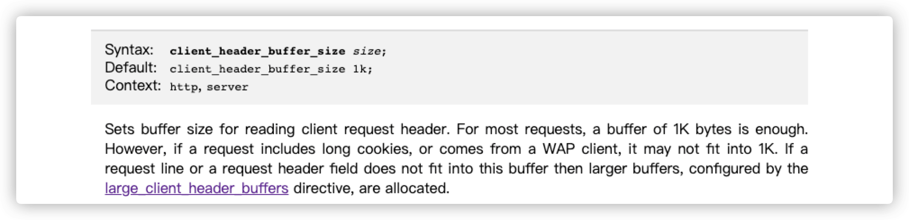

这里主要是为了记录在使用 Nginx 的时候遇到的问题及其处理解决方法。
诡异的问题时常发生，如果正确的处理它们呢？将是一个值得思考和学习的问题！通过对错误和异常问题的排除和处理，能够增长我们的知识储备已经掌握处理问题最为有效和使用的方式。这里将会记录常见的集群使用的问题，以备不时之需。
1. 提示 Cookie 长度超限
报错信息：Request Request Header Or Cookie Too Large
- [问题起因] 服务新建之后，其他用户登录网页的时候，页面提示
400: Bad Request错误，大致如下所示：

[解决方法] 后来发现，是因为多个服务公用同一个域名导致在该域名下面存储的
Cookie太多导致的，可以设置如下两个参数来缓解该问题的出现。设置读取客户端请求头的缓冲区大小。对于大多数请求，
1K字节的缓冲区就足够了。但是，如果一个请求包含很长的cookie，或者来自WAP客户端，那么它可能不适合1K。如果请求行或请求头字段不适合这个缓冲区，那么将分配更大的缓冲区，由large_client_header_buffers指令配置。

- 设置用于读取大型的客户端请求头的缓冲区的最大数量和大小。请求行不能超过一个缓冲区的大小，否则会向客户端返回
414（Request-URI Too Large）错误。请求头字段也不能超过一个缓冲区的大小，否则会将400（Bad Request）错误返回给客户端，缓冲区仅按需分配。默认情况下，缓冲区大小等于8K字节。 如果在请求处理结束后将连接转换为保持活动状态，则会释放这些缓冲区。
- 后来网上找到了，对
nginx处理header时的方法，大致如下所示：- 1.先处理请求的 request_line，之后才是
request_header。 - 2.这两者的
buffer分配策略相同。 - 3.先根据
client_header_buffer_size配置的值分配一个buffer，如果分配的buffer无法容纳request_line/request_header，那么就会再次根据large_client_header_buffers配置的参数分配large_buffer，如果large_buffer还是无法容纳，那么就会返回414/400错误。
- 1.先处理请求的 request_line，之后才是
- 根据对手册的理解，这两个指令在配置
header_buffer时的使用场景是不同的，个人理解如下：- 1.如果你的请求中的
header都很大，那么应该使用client_header_buffer_size，这样能减少一次内存分配。 - 2.如果你的请求中只有少量请求
header很大，那么应该使用large_client_header_buffers，因为这样就仅需在处理大header时才会分配更多的空间，从而减少无谓的内存空间浪费。
- 1.如果你的请求中的
2. 开启转发 Delete 方法
老版本 Nginx 默认不转发 put/delete 等方法
[问题起因] 使用
Nginx代理网盘服务，但是操作删除文件的时候，提示有问题。[解决方法]
ngx_http_dav_module模块是为通过WebDAV协议自动管理文件而设计的，该模块处理HTTP和WebDAV的请求方法PUT、DELETE、MKCOL、COPY和MOVE。默认情况下，该模块不会构建，需要使用编译参数-–with-http_dav_module开启。需要额外WebDAV方法的WebDAV客户端操作，在该模块中不会起作用。
# 示例配置
location / {
root /data/www;
client_body_temp_path /data/client_temp;
dav_methods PUT DELETE MKCOL COPY MOVE;
create_full_put_path on;
dav_access group:rw all:r;
limit_except GET {
allow 192.168.1.0/32;
deny all;
}
}
3. 配置多个 HTTPS 主机
在 Nginx 服务上如何在同一个 IP 上配置多个 HTTPS 主机呢？
- [问题起因] 最近有个需求，就是需要保证新旧域名同时运行。那么，这就需要对于
https的域名，在同一个IP上如何同时存在多个虚拟主机了。
- [解决方法]
Nginx支持SSL需要使用--http_ssl_module这个模块，如果使用的版本没有安装的话，则需要手动安装或者使用新版本。我们这里使用的Docker容器镜像，该版本默认是支持的。
# 手动编译安装SSL支持
$ ./configure --prefix=/usr/local/nginx \
--with-http_ssl_module \
--with-openssl-opt="enable-tlsext" ...
# 编译并安装
$ make && make install
# 查看版本是否支持SSL功能
root@7e201233b8e1:/# nginx -V | grep ssl
nginx version: nginx/1.19.10
built by gcc 8.3.0 (Debian 8.3.0-6)
built with OpenSSL 1.1.1d 10 Sep 2019
TLS SNI support enabled
server {
listen 443 ssl default_server;
server_name www.escapelife.site;
ssl_certificate "/xxx/escapelife_site.crt";
ssl_certificate_key "/xxx/escapelife_site.key";
location / {
proxy_http_version 1.1;
proxy_set_header Host $http_host;
proxy_pass http://172.16.123.100:8000;
}
}
server {
listen 443 ssl;
server_name www.escapelife.com;
ssl_certificate "/xxx/escapelife_com.crt";
ssl_certificate_key "/xxx/escapelife_com.key";
location / {
proxy_http_version 1.1;
proxy_set_header Host $http_host;
proxy_pass http://172.16.123.101:8000;
}
}
4. Nginx 实现协议自跳转
利用 Nginx 的 497 状态码实现 http 跳转 https
- [问题起因] 有一个需求，就是将
http的请求转发到https上面，我们需要怎么做呢？
# Nginx的497状态码定义
497 - normal request was sent to HTTPS
- [解决方法] 当部署的
Nginx网站只允许https协议访问的时候，我们可以利用error_page命令将497状态码的链接重定向到https的地址上面。因为使用http协议访问的时候，Nginx会报出497这个自定义的错误码，我们刚好利用了这点来完成配置的。http和https是tcp的上层协议，当Nginx服务器建立tcp连接后，根据收到的第一份数据来确定客户端是希望建立tls还是http。Nginx会判断tcp请求的首写节内容以进行区分，如果是0x80或者0x16就可能是ssl或者tls，然后尝试https握手。如果端口开启了https，但请求过来的并不是，会抛出一个http级别的错误。- 这个错误的状态码是
NGX_HTTP_TO_HTTPS，错误代码497，然后在返回response中会抛出一个400错误(因为497不是标准状态码，丢给浏览器也没有用)，这时浏览器会显示 “400 Bad Request,The plain HTTP request wes sent to HTTPS port”。这样，可以对497进行路由处理，做302重定向
# 示例配置
server {
listen 443;
server_name www.escapelife.com;
ssl on;
ssl_certificate cert/test.pem;
ssl_certificate_key cert/test.key;
# 让http请求重定向到https请求
error_page 497 https://$host$uri?$args;
}
- 当然，我们这里还可以使用其他方式完成同样的目的，但是使用
497这个状态码，可以不用开放80端口，直接将其转发到https协议上面。
# nginx的rewrite方法
# 将所有http请求通过rewrite重写到https上
sever{
listen 80;
server_name www.escapelife.com;
rewrite ^(.*)$ https://$host$uri permanentl;
}
server {
listen 443;
server_name www.escapelife.com;
ssl on;
ssl_certificate cert/test.pem;
ssl_certificate_key cert/test.key;
......
}
5. 用 Nginx 伪装 SSH 端口
利用 Nginx Stream 模块把 SSH 藏在 443 端口
[问题起因] 虽然可以使用
fail2ban防火墙工具护体(每天auth.log里一堆垃圾试探)，但是使用Stream模块加固SSH服务器的连接更上一层楼。[解决方法] 这样做的好处在于，当我们连接服务(
:ssh)的时候，需要经过443端口进入(可以屏蔽默认的22端口或自定义端口)，使服务更加安全一些且不要再头痛烦人的嗅探工具了。
stream {
map $ssl_preread_server_name $name {
escapelife xtls;
www.escapelife http;
default ssh;
}
upstream xtls {
server localhost:8081;
}
upstream http {
server localhost:8080;
}
upstream ssh {
# 默认ssh连接会回落到default然后到本机22端口
server localhost:22;
# 你甚至可以在这里挂个openvpn实现自用梯子
}
server {
listen 443 reuseport;
listen [::]443 reuseport;
proxy_pass $name;
proxy_protocol on;
ssl_preread on;
}
}
6. 解决 WS 链接 400 问题
内部环境发现页面 websocket 连接错误
- [问题起因] 因为服务前后端之前使用
WebSocket进行通信，所以遇到了如下问题：WebSocket可以减小客户端与服务器端建立连接的次数，减小系统资源开销，只需要一次HTTP握手，整个通讯过程是建立在一次连接/状态中，也就避免了HTTP的非状态性，服务端会一直与客户端保持连接，直到你关闭请求，同时由原本的客户端主动询问，转换为服务器有信息的时候推送。- 客户端的话，支持就很多了，比如
Chrome/Firefox/Safari等浏览器内置了JS语言的WebSocket客户端、微信小程序开发框架内置的WebSocket客户端等等
# 报错信息大致如下所示
WebSocket connection to 'ws://xxx' failed: Error during WebSocket handshake: Unexpected response code: 400
- [解决方法] 经查阅相关资料，在
nginx.conf配置文件中location加入如下参数，即可。
# Nginx从1.3版本开始支持WebSocket的
location /chat/ {
# 告诉Nginx使用HTTP/1.1通信协议，这是WebSocket必须要使用的协议
proxy_http_version 1.1;
# 告诉Nginx当它想要使用WebSocket时，升级响应HTTP请求
proxy_set_header Upgrade $http_upgrade;
proxy_set_header Connection "upgrade";
proxy_pass http://backend;
}
6. 用 Nginx 解决跨域问题
利用 Nginx Stream 模块把 SSH 藏在 443 端口
- [问题起因] 当发现请求出现
403跨域错误的时候，需要给Nginx服务器配置响应的header参数来解决。
- [解决方法] 之前介绍过什么是跨越问题，可以参考之前写的博文(HTTPS 跨越问题处理方法)。
- [1] Access-Control-Allow-Origin
- 服务器默认是不被允许跨域的
- 添加上述配置表示服务器可以接受的请求源
- 星号(
*)表示接受所有跨域的请求
- [2] Access-Control-Allow-Methods
- 设置允许的方法类型
- [3] Access-Control-Allow-Headers
- 设置当前请求
Content-Type的值被支持，一般包括Content-Type/Cache-Control等 - 因为
application/json格式的请求不属于MIME类型，需要先发送预检请求 - 预检请求会带上头部信息
Access-Control-Request-Headers: Content-Type： - 服务器返回的头部信息如果不包含则表示不接受非默认的
Content-Type会报错
- 设置当前请求
- [4] 给 OPTIONS 添加 204 的返回
- 按需添加，不涉及的话，可以不用配置，主要是为了让预检请求通过
- 为了处理在发送
POST请求时Nginx依然拒绝访问的错误 - 发送预检请求时，需要用到方法
OPTIONS，所以服务器需要允许该方法
- [1] Access-Control-Allow-Origin
# 可以加到server段中
location / {
add_header Access-Control-Allow-Origin *;
add_header Access-Control-Allow-Methods 'GET, POST, OPTIONS';
add_header Access-Control-Allow-Headers 'DNT,X-Mx-ReqToken,Keep-Alive,User-Agent,X-Requested-With,If-Modified-Since,Cache-Control,Content-Type,Authorization';
# 复杂请求时需配置；让预检请求通过；在location中才能添加
if ($request_method = 'OPTIONS') {
return 204;
}
}
# 指定接受那个来源的网址
# http://www.ruanyifeng.com/blog/2016/04/cors.html
add_header Access-Control-Allow-Origin http://sh.xxx.com;
# 要把Cookie发到服务器要服务器同意
# 设置此配置Origin就不能设为星号，必须指定明确与请求网页一致的域名
add_header Access-Control-Allow-Credentials 'true';
- [补充知识]
CORS是一个W3C标准，全称是跨域资源共享(Cross-origin resource sharing)。它允许浏览器向跨源服务器，发出XMLHttpRequest请求，从而克服了AJAX只能同源使用的限制。简单来说就是跨域的目标服务器要返回一系列的 Headers，通过这些 Headers 来控制是否同意跨域。CORS 提供的 Headers，在 Request 包和 Response 包中都有一部分。- 简单请求
- 请求方法是这三种方法(
HEAD/GET/POST)之一 - HTTP 的头信息不超出这几种字段(
Accept/Accept-Language/Content-Language/Content-Type) Content-Type限于application/x-www-form-urlencoded/multipart/form-data/text/plain
- 请求方法是这三种方法(
- 复杂请求
- 那种对服务器有特殊要求的请求
- 比如请求方法是
PUT、DELETE或OPTIONS的等 - 或者
Content-Type字段的类型是application/json的 - 非简单请求的
CORS请求会在正式通信之前增加一次HTTP查询请求，称为预检请求(用OPTIONS方法)
- 简单请求
# HTTP Response Header
Access-Control-Allow-Origin
Access-Control-Allow-Credentials
Access-Control-Allow-Methods
Access-Control-Allow-Headers
Access-Control-Expose-Headers
Access-Control-Max-Age
# HTTP Request Header
Access-Control-Request-Method
Access-Control-Request-Headers